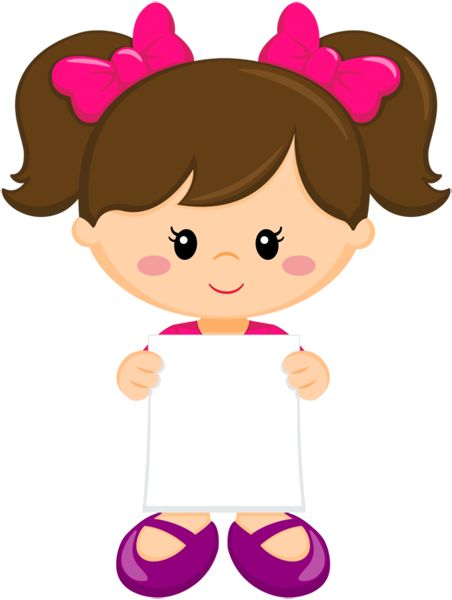
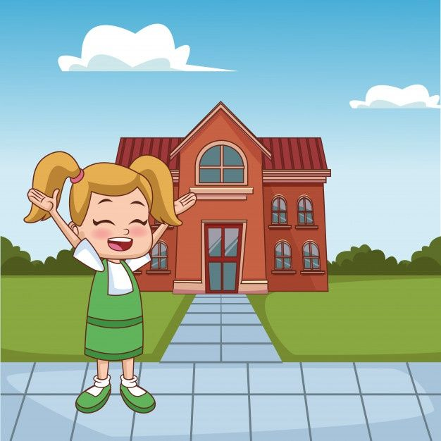

Mi AutoBiografia
Mi nobre es Kenia Perez Luna, naci el 20 de noviembre 2006 en Queretaro,
mis papás se llamas Adelina y Alfredo, tengo 2 hermanos mi hermana se llama
Galilea y mi hermano se llama Uriel, Galilea es la mayor y Uriel es el mas pequeño ,
recuerdo que cuando era pequeña me gustaba mucho salir de viaje.
Mi Educacion
- A los 3 años entre al prescolar, se llamaba Manuel Doblado

- A los 6 años entre a la escuela se llamaba Juan escutia

- A los 11 años me gradue de la escuela y estaba por entrar a la secundaria,cuando estre a la secundaria me gustaba mucho ir porque
tenia muchos amigos, mi secundaria era la tecnica #25, aunque despues ocurrio algo muy radical en mi vida pues cuando estaba por terminar
2 año de secundaria empezo pandemia (Covid-19), fue algo que me descontrolo mucho por que tanto como la escuela como los estudiantes no sabiamos que pasaria con nuestro estudio,
termine 2 año con clases virtuales, pero cuando termine este año me cambiaron de secundaria ya que era demasiado fatal la manera en
la que tomabamos clase, eran clases por television y realmente pasaban cosas que nada que ver con lo que nosotros sabiamos. Despues de terminar
el año me cambiaron al Instituto Cambridge (Mi actual escuela)para terminar mi ultimo año de secundaria,
en clases virtuales ya que el Covid-19 estaba muy feo y no podiamos ir a la escuela ya que podriamos contagiarnos, al principio yo
me sentia rara por que cuando haciamos video llamadas para las clases no conocia a nadie obviamente
- Despues de terminar 3 años de secuandaria, a los 15 años mis papás desidieron dejarme en el Instituto Cambridge para seguir estudiando la preparatoria
ya que mi hermana hiba ahi, cuando me dijeron que seguiria estudiando aqui me dieron a elegir una especialidad, y eleji la especialidad de programación
por que pense que seria tan simple y sencillo como utilizar word(pero no, vaya sorpresa la que me lleve ya que es todo lo contrario JAJJAJ), en 1 semestre
un estábamos en pandemia y aún no podiamos ir a la prepa, despues en 2 semestre pasamosun buen tiempo en clases en linea pero despues nos dijeron que ya
podriamos ir a la pepa, pero que no era obligatorio esra a nuestra consideración recuerdo que solamente ibamos 2 dias a presencial y los demas en linea,
despues de un tiempo nos dijeron que ya podiamos ir a la escuela un dia si un dia no y asi sucesibamente, 2 semestre fue asi hasta que acabo, despues en
3 semestre ya entramos a presencial todos los dias, en 4 semestre tambien ibamos todos los dias, en 5 igual y ahora en 6 semestre mi ultimo semestre de
prepa seguimos llendo todos los dias.